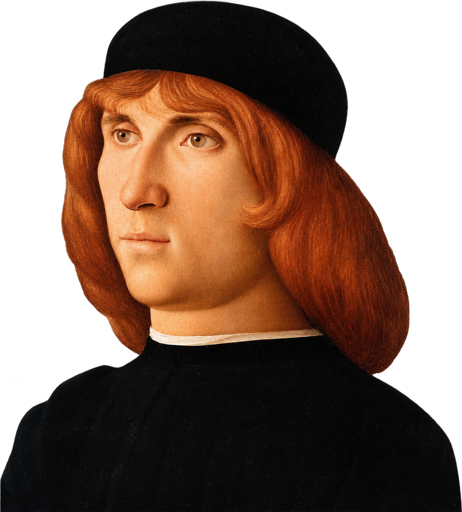
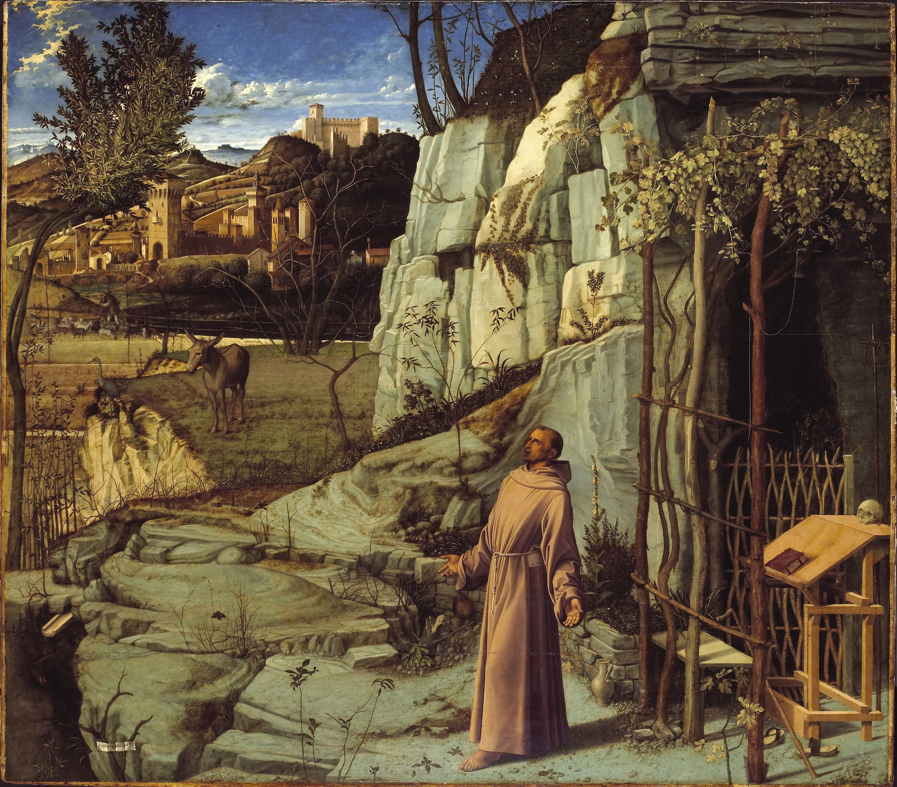
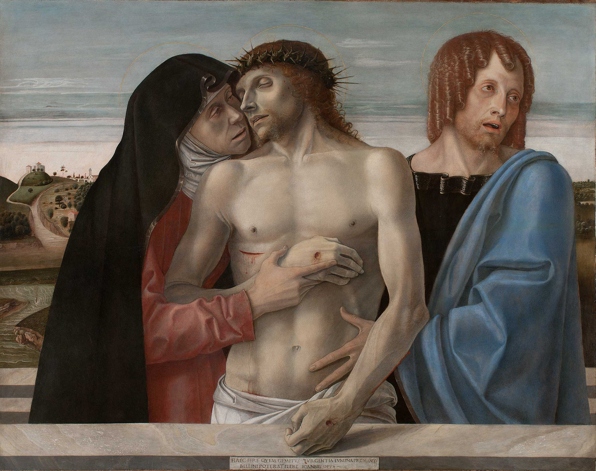
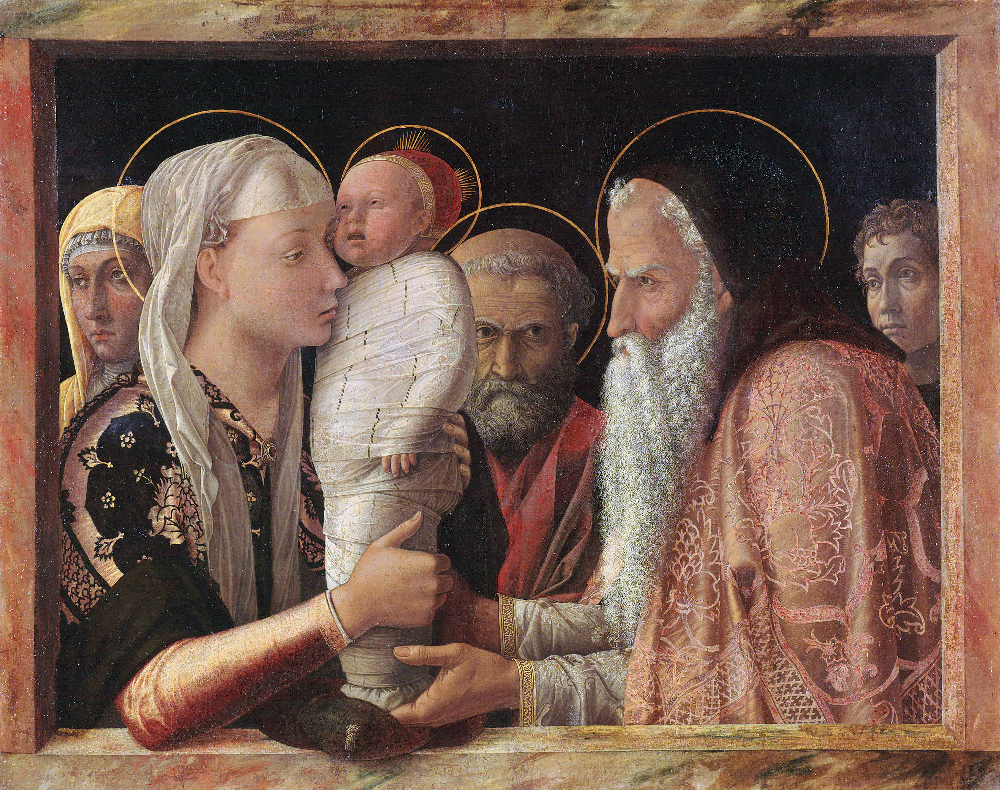

Giovanni Bellini
vers 1430–1516
From the glow of a golden vault to hills fading in the distance, Bellini uses light and colour to create a sense of depth.

In a few words
Giovanni Bellini grew up in a family of painters in Venice. His father Jacopo ran a workshop where his brother Gentile also worked. He learned to paint in a city where churches and confraternities commissioned many works.
From small panels for private prayer to large church altarpieces, Bellini adapted his painting to where it would be seen and from what distance. In his sacred scenes, he also gave ever more room to landscapes shaped by human life.
The Frari Triptych

Look closely
Start with the gilded uprights separating the three panels. Notice how the painted ceilings in the side panels seem to rest on these wooden supports. Behind the saints, a narrow strip of landscape offers a glimpse of the space beyond.
Return to the centre. The gold mosaic follows the curve of the vault above the Virgin. Move your eye down from the throne to the two angels playing music. Their small scale and position at the foot of the steps emphasise how high Bellini has placed Mary and the Child.
Understanding
Making the frame part of the architecture
Bellini gives the divisions of the triptych a new role. The uprights physically separate the panels and appear to support a single building. The saints on either side and the Virgin seem to occupy the same chapel. This is the principle of the sacra conversazione, a gathering of sacred figures within a shared space. wga.hu
Gold plays a part in this construction. Bellini paints it as a mosaic catching the light on the curved surface of a vault. Its glow marks Mary’s special place at the centre. The openings to either side give the building depth. The frame, perspective and light bring the three panels together.
The Alzano Madonna

Look closely
Begin with the red marble ledge. A piece of fruit rests on top. On the surface facing us, a crumpled slip of paper bears Bellini’s signature. Move your eye up to Mary’s hands and see how they support the Child seated on her knee.
Then follow the edges of the curtain behind them. A landscape opens up on either side. On the left, look for the small boats near the city on the water. On the right, find the fortified town. Compare the scale of the distant figures with that of the Child.
Understanding
Bringing the figures close, opening up the landscape
Bellini paints the marble ledge as though it were within reach. The fruit resting on it and the paper that seems to be attached to it strengthen the illusion. His own name becomes a detail within the painting. Behind the figures, the curtain closes off the space. It sets the Virgin and Child apart from the landscape and lets us see the gesture between them clearly. digital.nga.gov.au
To either side, the towns, boats and tiny figures give the eye a very different distance to travel. What is distinctive about Bellini is the way he brings these two scales together. The landscape can hold our attention with its details. The ledge and curtain bring us back to the intimacy of a mother holding her child.
Saint Francis in the Desert

Look closely
Find Francis outside his shelter, on the right. He stands barefoot, his arms spread and his face turned up towards the left. Look closely for the small marks on his palms. On the side towards which he looks, follow the light across the rock faces. Near the shelter, the shadows deepen.
Then let your eye travel down into the valley. Find the shepherd and his flock, then the fortified town. Compare the sharp edges of the rocks near Francis with the softer outlines of the distant mountains.
Understanding
Making light the sign of the event
The marks on Francis’s palms suggest the episode of the stigmata. According to tradition, Francis received Christ’s wounds at La Verna. Bellini gives the event a subtle form. Light enters from the upper left, illuminates the rock and reaches the saint. The same light that gives the landscape its relief can be read as a sign of divine presence. frick.org
By softening contrasts in the distance, Bellini gives depth to the valley and sets this place of retreat within an inhabited world. Far away, the shepherd goes on his way. Close to us, Francis stops and looks up. The difference in pace gives the painting its force. An intimate event takes place in a landscape where life goes on.
The Brera Pietà

Look closely
Look at the faces of Mary and Christ. She leans so close that she almost touches him. On the right, John turns his head away, his lips parted. Look down at the hands. Mary holds Christ’s wounded hand. Notice the difference in skin tone where their hands meet.
At the bottom, the edge of the tomb runs across the panel. Look for the Latin inscription on its front, at the point closest to us
Understanding
Giving grief two forms
Bellini draws the three figures together in the foreground. Their closeness makes the difference between their gestures more apparent. Mary leans towards Christ as if to hold on to one last moment of contact. John turns his face away. The cool light of the landscape also reaches the figures. It brings out the pallor of Christ’s flesh where Mary’s hand touches his. Pinacoteca di Brera
The inscription on the tomb echoes an idea from the Latin poet Propertius, that an image can move us to tears. The words imagine Bellini’s painting itself capable of weeping. Placed close to the viewer, they invite us to look again at the faces and hands and see how a painting can draw us into someone else’s grief.
Two Presentations at the Temple: Mantegna and Bellini


Look closely
Can you spot the same gesture in both paintings? Mary holds the swaddled Child and Simeon reaches out to receive him. In Mantegna’s painting, look at Simeon’s fingers, then at the folds of his sleeve. Their outlines are sharp, as though the figures were coming forward from the stone frame. Now look at the same part of Bellini’s painting. The gesture is still there. But see how gently the shadow falls across Simeon’s face. Then let your eyes travel to the edges. The stone frame remains only at the bottom, and two more faces come into view.
Understanding
From Padua to Venice, the same scene takes on a different depth
Why do Mantegna’s figures look almost sculpted? In Padua, where he trained, the Florentine sculptor Donatello made reliefs for the Basilica of Saint Anthony. Mantegna’s painted frame and the sharply defined hands and folds create an effect you can also see in a carved relief. The figures seem to project towards us.
In Venice, Bellini takes up Mary’s and Simeon’s gesture. By opening the frame at the sides, he makes more room for the witnesses. By softening the transitions from light to shadow, he shapes the faces through subtle shifts in colour. Look again at the hands around the Child. In Mantegna, they seem to emerge from a relief. In Bellini, you discover the same gesture among faces that a soft light brings out of the shadows.
How to recognise Giovanni Bellini?
Light that models forms. Follow the transitions from light to shade across a face or a rock.
Restrained gestures that convey emotion. A hand supports a body, one face draws close, another turns away.
An inhabited landscape that opens into the distance. Find a boat or a shepherd, then follow the slopes towards the horizon.
Architecture that brings figures together. In the altarpieces, follow a cornice or a vault to see how the saints share the space.
Key takeaways
Bellini’s contribution to Venetian painting is the way he makes light part of the composition. It gives figures volume, connects different planes and shapes the meaning of the scene. The two Presentations at the Temple bring this approach into focus. Bellini takes up Mantegna’s composition and widens it. He keeps the stone ledge, opens out the sides and lets subtle shifts of tone connect the faces. National Gallery, London
The four works on this page show what that attention to light makes possible. In the Frari Triptych, the golden vault gives a chapel spread across three panels its centre. In the Alzano Madonna, the openings on either side of the curtain lead the eye from a mother’s gesture to a distant landscape. In Saint Francis in the Desert, the light falling on the rocks can also suggest a divine presence. In the Pietà, it brings out the pallor of Christ’s flesh where Mary touches him. www.wga.hu
When you look at another Bellini, follow the light. Where does it lead you, and what does it draw your attention to?
Poursuivre la découverte
Compare the two Presentations at the Temple.
Artistic exchanges around Venetian painting.
Space, light and silence: two approaches.